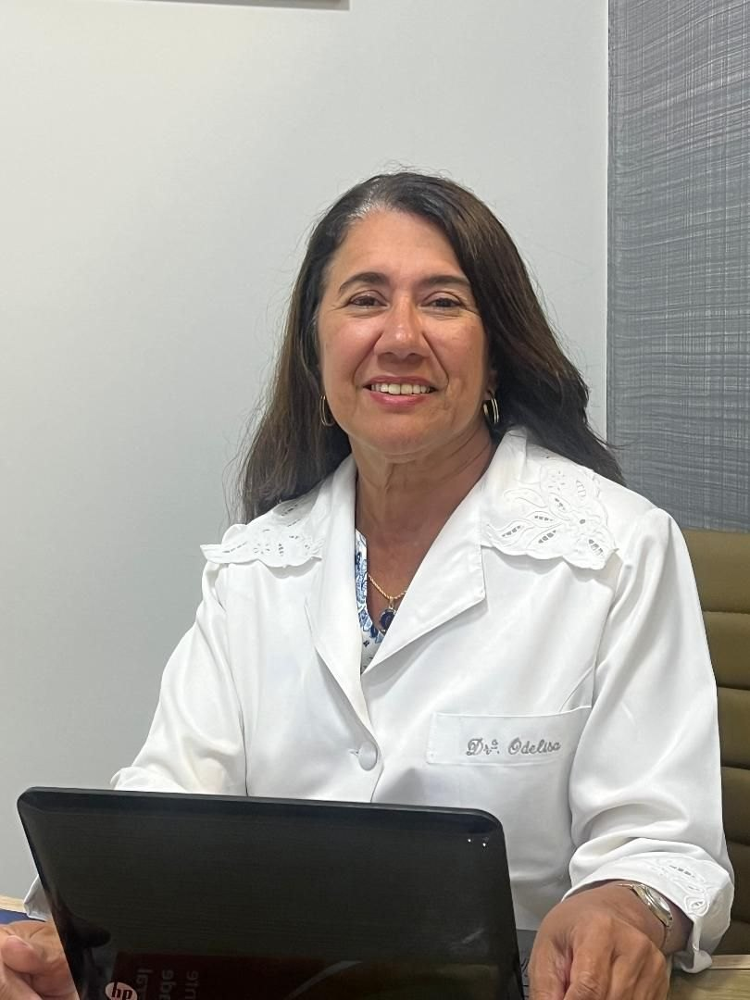

Clínica médicaCRM-BA 8669 · RQE 6371
Dra. Odelisa Matos
Clínica médica para adultos, com atenção ao diabetes, à tireoide, ao peso, à menopausa e à osteoporose. Consultório em Ondina.
“…a ética, o conhecimento, o cuidado e o respeito…”
UFBA · 1986CEDEBA desde 1994

Áreas de atenção
Diabetes, tireoide e metabolismo, com tempo para conversar.
No CEDEBA desde 1994
Diabetes
Tipo 1, tipo 2, pré-diabetes, resistência à insulina e diabetes gestacional. Acompanhamento de longo prazo, com a glicemia lida junto com a vida de cada pessoa.
Conhecer o cuidado →Glândula tireoide
Tireoide
Hipotireoidismo, nódulos, bócio, Hashimoto e Graves.
Conhecer →Metabolismo
Peso e metabolismo
Obesidade, colesterol, fígado gorduroso e síndrome metabólica.
Conhecer →Climatério
Menopausa
Mudanças do climatério, conversadas com calma.
Conhecer →Ossos e músculos
Osteoporose
Densidade óssea, vitamina D e massa muscular.
Conhecer →Também fazem parte do consultório: check-up, deficiência de vitamina B12, doenças da hipófise e das paratireoides e a testosterona baixa no envelhecimento masculino. A indicação é sempre individual, definida em consulta.
Quando procurar
O que traz alguém ao consultório?
Um exame de glicose veio alterado
Glicemia ou hemoglobina glicada fora da faixa de referência pedem contexto: a história, outros exames e, às vezes, a repetição do teste. Pré-diabetes e diabetes têm critérios definidos, e o diagnóstico é feito em consulta.
DiabetesO exame da tireoide mudou
TSH ou T4 alterados, um nódulo visto no ultrassom, o pescoço mais volumoso: cada achado tem o seu caminho de investigação, e nem toda alteração pede remédio. A decisão é individual.
TireoideMenopausa, ossos e força
O climatério traz mudanças no corpo, no sono e nos exames. Densitometria, vitamina D e massa muscular entram na conversa conforme a idade e a história de cada mulher.
Menopausa e ossosA consulta
Conversa, exame e um plano que acompanha você.
- 01Conversar
A sua história, os sintomas, os remédios em uso e o que preocupa você.
- 02Examinar e rever exames
Exame físico e leitura dos exames que você já tem. Novos pedidos só quando ajudam a decidir.
- 03Acompanhar
Um plano individual, com retornos combinados. Diabetes, tireoide e ossos pedem cuidado ao longo do tempo.
A médica
Formada em 1986, em consultório desde 1990.
Odelisa Silva de Matos atende adultos em Ondina. “Atuo na área de clínica médica, principalmente no tratamento do diabetes mellitus, obesidade, doenças da tireoide, menopausa, osteoporose e outras doenças metabólicas.”
- Medicina · 1986Universidade Federal da Bahia
- 1988Residência médica
- Desde 1994Centro de Diabetes e Endocrinologia da Bahia
“…o qual fui uma das fundadoras.”
- SociedadesSociedade Brasileira de Diabetes e Sociedade Brasileira de Endocrinologia e Metabologia
Nas palavras da médica
“São meus pilares profissionais a ética, o conhecimento, o cuidado e o respeito por aqueles que dividem comigo o seu bem maior, a VIDA.”
Dra. Odelisa Matos, em seu perfil profissional
Pesquisa
Pesquisa feita com pacientes brasileiros.
Qualidade de vida de pessoas com diabetes tipo 1 nas diferentes regiões do Brasil.
Ler o resumo ↗2014 · Nutrition JournalAdesão à dieta, controle da glicemia e fatores de risco cardiovascular no diabetes tipo 1.
Ler o resumo ↗2012 · Cardiovascular DiabetologyComportamento dos lipídios conforme a hemoglobina glicada no diabetes tipo 1.
Ler o resumo ↗Coautoria em estudos nacionais do Grupo Brasileiro de Estudo do Diabetes Tipo 1, pelo Centro de Diabetes e Endocrinologia da Bahia, e “diversas publicações em Congressos da Sociedade Brasileira de Diabetes”.
Onde atendo
Consultório em Ondina, em Salvador.
Onde atendo
Centro Médico Empresarial · Ondina
Av. Anita Garibaldi, 1815, sala 110 BOndina · Salvador/BA · 40170-130
Atendimento a adultos, com hora marcada. Confirme dia, horário e condições com a recepção.
Perguntas frequentes
Dúvidas antes da consulta
Quem a Dra. Odelisa atende?
Adultos, no consultório em Ondina, com hora marcada.
Ela acompanha diabetes tipo 1 e tipo 2?
Sim. Diabetes tipo 1 e tipo 2, pré-diabetes, resistência à insulina e diabetes gestacional estão entre os temas que ela acompanha.
O que levar na primeira consulta?
Exames recentes, receitas e a lista dos remédios em uso, com as doses. Se mede a glicose em casa, leve as anotações ou o aparelho. Novos exames dependem da avaliação.
Aceita convênio?
Condições de atendimento e convênios são confirmados diretamente com a recepção.
O formulário confirma meu horário?
Não. É só um pedido de preferência. A recepção verifica a disponibilidade e confirma pelo WhatsApp.
Fale com a recepção
Qual dia e horário funcionam para você?
Escolha uma preferência e prepare a mensagem. A recepção responde e confirma.
Contato
O seu bem maior, a vida.
Centro Médico Empresarial · Ondina · (71) 98749-6023